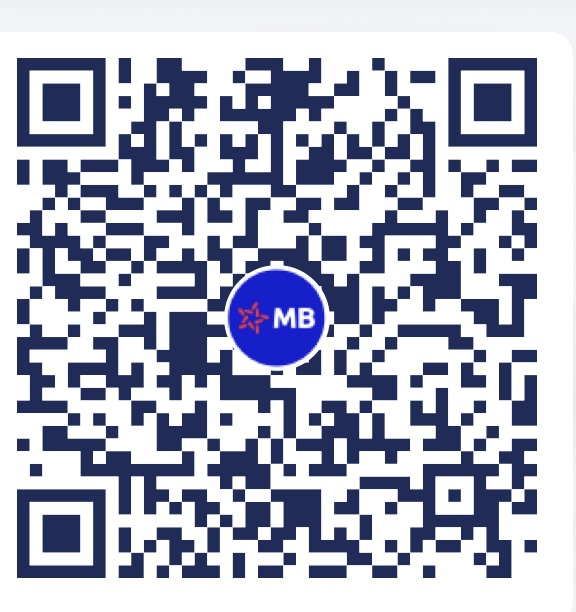
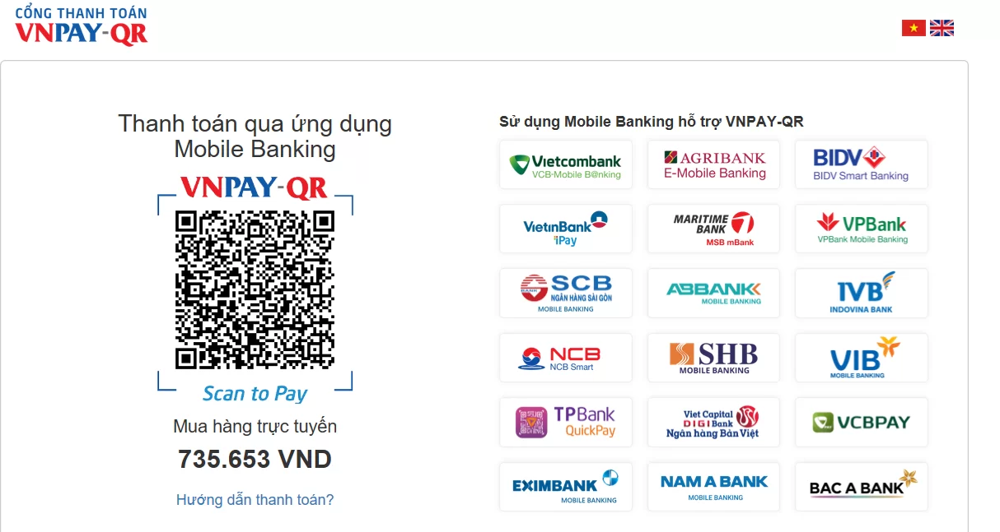

Hướng dẫn thanh toán
I.Thanh toán bằng tiền mặt
Để thanh toán bằng tiền mặt, bạn có thể đến tại hệ thông cửa hàng
- Khách hàng có thể đến mua hàng và thanh toán trực tiếp tại các cửa hàng thuộc hệ thống của Caffee Depresso
2.Tại nơi nhận hàng:Thanh toán trực tiếp cho nhân viên giao hàng tại nơi bạn nhận sản phẩm.
Lưu ý: Vui lòng kiểm tra tổng số tiền thanh toán và nhận lại tiền thừa (nếu có) từ nhân viên thanh toán.
II.Thanh toán qua tài khoản ngân hàng
Để thanh toán qua tài khoản ngân hàng, bạn có thể làm theo các bước dưới đây:
- Bước 1: Chọn ngân hàng MB Bank
- Bước 2: Nhập STK:0386276545
- Bước 3: Nhập mật khẩu thanh toán
- Bước 4: Xác nhận thanh toán.
Hoặc có thể trực tiếp quét mã
III.Thanh toán qua thẻ Visa/Master/JCB
Để thanh toán trực tuyến quua thẻ Visa/Master bạn cần sở hữu 1 thẻ Visa/Master/JCB

Sau khi chọn hình thức thanh toán qua thẻ Visa/Master/JCB hệ thống chuyển sang giao diện thanh toán của OnePay và bạn hãy điền các thông tin theo hưỡng dẫn để hoàn tất việc đặt hàng
IV.Thanh toán qua VNPay
Điều kiện để thanh toán là thẻ ATM có hỗ trợ thanh toán trực tuyến qua VNPAY QR, những ngân hàng liên kết vs VNPAY QR
Sau khi chọn hình thức thanh toán qua VNPAY QR, hệ thống chuyển sang giao diện thanh toán của VNPAY
Sau đó, bạn hãy mở app ngân hàng quét mã QR trên để hoàn tất việc đặt hàng.
Với các đơn hàng có yêu cầu xuất hóa đơn hoặc xác nhận chuyển tiền và lấy thông tin đơn hàng xin quý khách liên hệ số : hotline 0906.894.528
QUY ĐỊNH VỀ HOÀN TRẢ TIỀN KHI THANH TOÁN TRỰC TUYẾN
Trong trường hợp quý khách hàng đã mua hàng & thanh toán trực tuyến thành công nhưng dư tiền, hoặc trả sản phẩm,Coffee Depresso sẽ hoàn tiền vào thẻ quý khách đã dùng để thanh toán, theo thời hạn như sau:
- Đối với thẻ ATM: Thời gian khách hàng nhận được tiền hoàn từ 7 – 10 ngày (trừ Thứ 7, Chủ Nhật và Ngày lễ) kể từ khi rang rang coffee nhận được đề nghị của khách hàng. Nếu qua thời gian trên không nhận được tiền, rang rang coffee sẽ hỗ trợ liên hệ ngân hàng của khách hàng để giải quyết.
- Đối với thẻ Visa/Master card/JCB: Thời gian khách hàng nhận được tiền hoàn từ 7-15 ngày làm việc kể từ khi rang rang coffee nhận được đề nghị của khách hàng. Nếu qua thời gian trên không nhận được tiền, rang rang coffee sẽ hỗ trợ liên hệ ngân hàng của khách hàng để giải quyết.
- Đối với thanh toán bằng hình thức VNPAY QR: Thời gian Khách hàng nhận được tiền hoàn 3 – 8 ngày. Nếu qua thời gian trên khách hàng không nhận được tiền, khách hàng liên hệ rang rang coffee để được giải quyết.